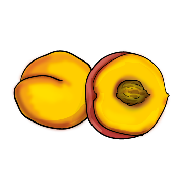
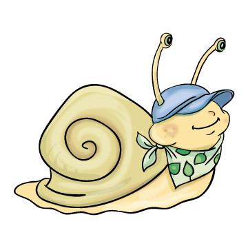
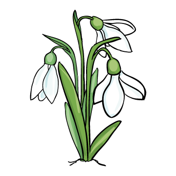

|
   |
Ha ol-vad-ni kezd a hó, lát-ha-tod fe-hér fe-jem, zöld le-ve-lem.
Ham-vas a hé-jam, fi-nom a hú-som, ha le-hullt a hó, e-he-ted kom-pó-tom.
Há-ta-mon a há-zam. Las-san ha-la-dok, ha el-fá-ra-dok, pi-he-nek.
|